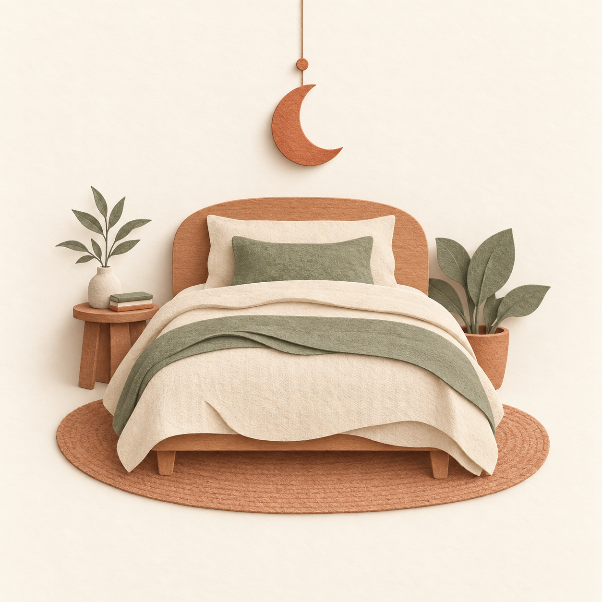

Freitag, 18. September
22:41
Morgen Abend
Schlafenszeit ≈ Sa 23:00
Erinnerung kommt 15 Min. vorher · 8 Std. Schlaf bis „Frühschicht“

Übermorgen
07:00
Frühschicht
So, 20.09. · 07:00
Alle 35 Tage · ab 29.03.2026 · in 1 Tag 8 Std.
Montag
06:30
Werktags
Mo–Fr · Mo, 21.09. · 06:30
Klingelzeichen → Offene Ideen → Eigener Text → Musik
Ruht
09:15
Wochenende
Sa · So · ausgeschaltet